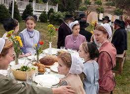

Two important religious rituals in Amish life are baptism and communion.
As Anabaptists, the Amish place supreme importance on adult baptism. Those who take the baptismal vow commit themselves to following the ways of Jesus and upholding the Ordnung of the church for life. Most young people take their baptismal vows between 18 and 22 years of age, during a Sunday morning service that follows several weeks of instruction for the candidates. The decision to join the church is the big decision for Amish youth. This lifelong promise before God and the members of their community means that they will be accountable to the church for the rest of their lives. If they renege on their vows and stray from the church, they face excommunication and shunning. On the other hand, if they leave the community before baptism, they will not face any formal sanctions because the Amish respect an individual’s voluntary decision regarding church membership.
Communion services, held each autumn and spring, frame the religious year. These ritual high points emphasize self-examination and spiritual rejuvenation. Members confess their sins and reaffirm their vow to uphold the Ordnung at a council meeting held prior to the communion service. Communion is held when all members are in harmony. The eight-hour service includes preaching, a light meal during the service, and the commemoration of Christ’s death with bread and wine. Pairs of members wash each another’s feet as the congregation sings. At the end of the service, members give an alms offering to the deacon. This is the only time that offerings are gathered in Amish services.
The Amish consider the Bible a trustworthy guide for living but do not quote it excessively. To do so would be considered a sinful showing of pride.
Both out of concern for the effect of absence from the family life, and to minimize contact with outsiders, many Old Order Amish prefer to work at home. Increased prices of farmland and decreasing revenues for low-tech farming have forced many Amish to work away from the farm, particularly in construction and manufacturing, and, in those areas where there is a significant tourist trade, to engage in shop work and crafts for profit. The Amish are ambivalent about both the consequences of this contact and the commoditization of their culture. The decorative arts play little role in authentic Amish life, and are in fact regarded with suspicion, as a field where egotism and a display of vanity can easily develop. Members who break church rules may be called to confess before the congregation. Those who will not correct their behavior are excommunicated. Excommunicated members are shunned to shame the individual into returning to the church. Members may interact with and even help a shunned person, but may not accept anything, like a handshake, payment, or automobile ride, directly from the wayward person. Some communities have split in the last century over how they apply this practice of "Meidung". This form of discipline is recommended by the bishop after a long process of working with the individual and must be unanimously approved by the congregation. Excommunicated members will be accepted back into the church if they return and confess their wrongdoing.
Generally, the Amish hold communion in the spring and the autumn, and not necessarily during regular church services. Communion is only held open to those who have been baptized. As with regular services, the men and women sit separately. The ritual ends with members washing and drying each other's feet.
The practice of believer's baptism is the Amish's admission into the church. They and other Anabaptists do not accept that a child can be meaningfully baptized. Their children are expected to follow the will of their parents on all issues, but when they come of age, they must choose to make an adult, permanent commitment to God and the community. Those who come to be baptized sit with one hand over their face, representing humility and submission to the church.